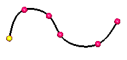
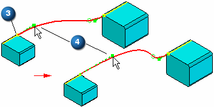
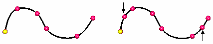
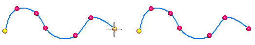
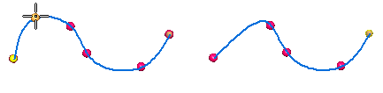
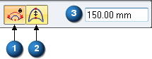
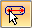
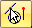
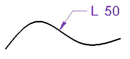

Keypoint Curve command
Use the Keypoint Curve command to create a 3-D curve through a set of three or more points. The points can be points you create with the Point command, keypoints on wireframe elements and edges, or points in free space.

When you select a keypoint on a wireframe element or edge as the endpoint (3) of the curve, the End Conditions Step allows you to specify how the curve is connected to the wireframe element or edge you selected. When you specify that the curve is tangent continuous to an element at its endpoint, you can also modify the magnitude of the tangent vector by dragging the tangent vector handle (4) to a new location. When you modify the magnitude of the tangent vector, you also may change the radius of curvature of the curve.

You can use the OrientXpres tool to help you define the location of a point on a keypoint curve. For example, you can use OrientXpres to lock input to a particular axis or plane when creating or editing a keypoint curve.
Inserting points to a curve
You can add new points along a curve or add a point in free space to add a new segment to the end of the curve.
To add a point along a path, while editing the curve, hold the Alt key and click the location along the curve where you want to add the point.

To add a point to the end of the path, while editing the curve, hold the ALT key and click a location in free space where you want to add the point.

Removing points from a curve
You can remove a point from a curve.
To remove a point, while editing the curve, hold the Alt key and click the point you want to remove. When you remove edit points, the control vertex points move and the shape of the curve changes.

If you remove the start or end point of a curve, the path truncates to the next control on the curve and the tangency of the next point remains the same.
Defining curve length
You can set the Curve Length options for the keypoint curve definition. When this option is set, the curve length remains fixed during an edit. You click the Fixed Length (1) button to lock the curve length (3). The Constrain Direction (2) button defines the direction that the control points move when you edit the curve length. You can constrain along the X, Y and Z axis or any linear edge/curve or axis. The increase or decrease in length bows in that direction.

Synchronous keypoint curves cannot be edited after creation.
Locate options
You can turn on the Locate Circular Cutouts

option to direct the curve to follow the cylindrical axis as the path. You can also set the Locate Keypoints
option to select keypoints of elements in the model.Dimensioning a keypoint curve
When placing a Smart Dimension on a keypoint curve, the dimension option is set to Length.
